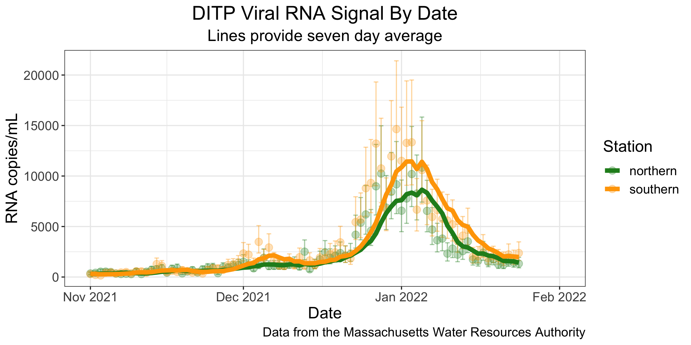
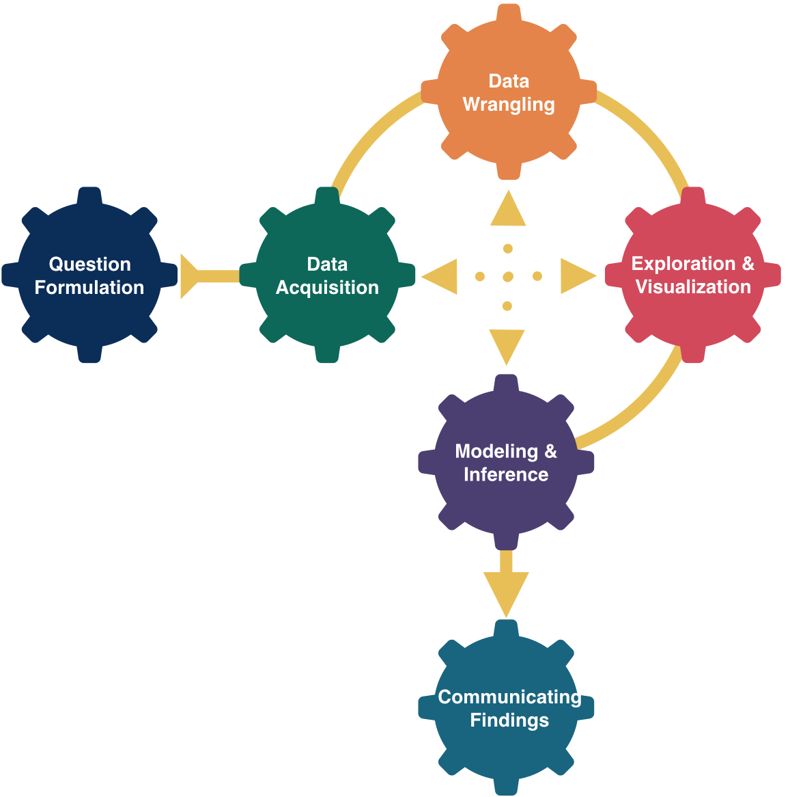

Data and AI Literacy
Kelly McConville
Dominguez Center for Data Science
Data Literacy
What is data literacy?
It is not the same as mathematical literacy.
XXX
Data in Stat 100
Will use a wide-range of real and relevant data examples


Data in Stat 100


I understand that some of these topics have likely had profound impacts on your lives.
We will focus class time on the key course objectives but will use these current topics to empower ourselves and to see how we can productively participate with data.
Example: Visualizing COVID Prevalence
Example: Visualizing COVID Prevalence
- In May of 2020, the Georgia Department of Public Health posted the following graph:

At a quick first glance, what story does the Georgia Department of Public Health graph appear to be telling?
What is misleading about the Georgia Department of Public Health graph? How could we fix this issue?
Example: Visualizing COVID Prevalence
- After public outcry, the Georgia Department of Public Health said they made a mistake and posted the following updated graph:

- How do your conclusions about COVID-19 cases in Georgia change when now interpreting this new graph?
Alberto Cairo, a journalist and designer, created the second graph of the Georgia COVID-19 data:

A key principle of data visualization is to “help the viewer make meaningful comparisons”.
What comparisons are made easy by the lefthand graph? What about by the righthand graph?
From these graphs, can we get an accurate estimate of the COVID prevalence in these Georgian counties over this two week period?
Example: Visualizing COVID Prevalence
- The Massachusetts Water Resources Authority (MWRA) graph tracks the presence of COVID-19 in the Boston-area wastewater.
What are the pros of using wastewater over nasal swabs to assess COVID prevalence? What are the cons?
One more note: The graph also incorporates uncertainty measures, a key statistical thinking idea that we will learn more about later in the semester!
What is “Statistical Thinking?”
Statistical Thinking
- Understanding the importance of context.
Context explains the Monday jumps in the COVID counts.
- How we encode information in a graph should be driven by our research question.
Design choices impact the conclusions the viewer draws.
- How the data are collected impacts the conclusions we can draw.
Voluntary COVID test results don’t likely provide good estimates of COVID prevalence.
- Often we are using a sample of data to say something about a larger group. In this case, we should measure how certain our estimates are!
We will learn to compute and interpret certainty estimates (like those in the wastewater graph) later in the course!
Statistical Thinking
About developing reasoning (not just learning definitions and formulae).
Developing our statistical thinking skills will allow us to soundly extract knowledge from data!
Statistical thinking requires judgment that takes time to develop.
- Will see examples and practice applying statistical thinking throughout the course.
What are/is Data?
“‘Raw data’ is an oxymoron.” – Lisa Gitelman
“Data … is information made tractable.” – Catherine D’Ignazio and Lauren Klein
Data Frames
Data in spreadsheet-like format where:
Rows = Observations/cases
Columns = Variables
| ID | kind | .pred_AI | .pred_class | detector | native | name | model |
|---|---|---|---|---|---|---|---|
| 1 | Human | 0.9999942 | AI | Sapling | No | Real TOEFL | Human |
| 2 | Human | 0.8281448 | AI | Crossplag | No | Real TOEFL | Human |
| 3 | Human | 0.0002137 | Human | Crossplag | Yes | Real College Essays | Human |
| 4 | AI | 0.0000000 | Human | ZeroGPT | NA | Fake CS224N - GPT3 | GPT3 |
| 5 | AI | 0.0017841 | Human | OriginalityAI | NA | Fake CS224N - GPT3, PE | GPT4 |
| 6 | Human | 0.0001783 | Human | HFOpenAI | Yes | Real CS224N | Human |
- Data from GPT Detectors Are Biased Against Non-Native English Writers. Weixin Liang, Mert Yuksekgonul, Yining Mao, Eric Wu, James Zou. CellPress Patterns and available in the
Rpackagedetectors.
Data Frames
| ID | kind | .pred_AI | .pred_class | detector | native | name | model |
|---|---|---|---|---|---|---|---|
| 1 | Human | 0.9999942 | AI | Sapling | No | Real TOEFL | Human |
| 2 | Human | 0.8281448 | AI | Crossplag | No | Real TOEFL | Human |
| 3 | Human | 0.0002137 | Human | Crossplag | Yes | Real College Essays | Human |
| 4 | AI | 0.0000000 | Human | ZeroGPT | NA | Fake CS224N - GPT3 | GPT3 |
| 5 | AI | 0.0017841 | Human | OriginalityAI | NA | Fake CS224N - GPT3, PE | GPT4 |
| 6 | Human | 0.0001783 | Human | HFOpenAI | Yes | Real CS224N | Human |
Rows = Observations/cases
What are the cases? What does each row represent?
Data Frames
| ID | kind | .pred_AI | .pred_class | detector | native | name | model |
|---|---|---|---|---|---|---|---|
| 1 | Human | 0.9999942 | AI | Sapling | No | Real TOEFL | Human |
| 2 | Human | 0.8281448 | AI | Crossplag | No | Real TOEFL | Human |
| 3 | Human | 0.0002137 | Human | Crossplag | Yes | Real College Essays | Human |
| 4 | AI | 0.0000000 | Human | ZeroGPT | NA | Fake CS224N - GPT3 | GPT3 |
| 5 | AI | 0.0017841 | Human | OriginalityAI | NA | Fake CS224N - GPT3, PE | GPT4 |
| 6 | Human | 0.0001783 | Human | HFOpenAI | Yes | Real CS224N | Human |
Columns = Variables
Variables: Describe characteristics of the observations
Quantitative: Numerical in nature
Categorical: Values are categories
Identification: Uniquely identify each case
| ID | kind | .pred_AI | .pred_class | detector | native | name | model |
|---|---|---|---|---|---|---|---|
| 1 | Human | 0.9999942 | AI | Sapling | No | Real TOEFL | Human |
| 2 | Human | 0.8281448 | AI | Crossplag | No | Real TOEFL | Human |
| 3 | Human | 0.0002137 | Human | Crossplag | Yes | Real College Essays | Human |
| 4 | AI | 0.0000000 | Human | ZeroGPT | NA | Fake CS224N - GPT3 | GPT3 |
| 5 | AI | 0.0017841 | Human | OriginalityAI | NA | Fake CS224N - GPT3, PE | GPT4 |
| 6 | Human | 0.0001783 | Human | HFOpenAI | Yes | Real CS224N | Human |
Every time you get a new dataset, spend time exploring the variables.
Example questions:
Is the variable capturing what I want?
For categorical variables, what are the categories? Do those categories adequately represent the data represented by that variable?
For quantitative variables, what values are possible? Were the data rounded or binned? Are those values actually encoding categories? What are the units of measurement?
Goal: Start collecting data from your life so that you can visualize it on P-Set 1.
Hand-Drawn Data Viz
Once we have collected data, a common next step is to visualize it.
Two key aspects of data visualization:
Determining how you want to display the data.
Figuring out how to tell the computer to do that mapping.
Hand-drawn data visualizations allow us to focus on the first part with full control over the creative process!
Hand-Drawn Data Viz Examples
“Each week, and for a year, we collected and measured a particular type of data about our lives, used this data to make a drawing on a postcard-sized sheet of paper, and then dropped the postcard in an English”postbox” (Stefanie) or an American “mailbox” (Giorgia)!“
Dear Data Examples

Dear Data Examples

More Dear Data Examples
- Becky Cooper handed out hand-drawn maps of Manhattan to strangers and asked them to “map their Manhattan.”

- What would the data frame for this visualization look like?
More Dear Data Examples

- What would the data frame for this visualization look like?
More Dear Data Examples

- What would the data frame for this visualization look like?
Goal: By next Wed, collect data from your life so that you can visualize it on P-Set 1.
Recommendations
Store the data in your favorite spreadsheet program (Google Sheets, Numbers, Excel).
Determine what your cases/observations will be.
Collect data on more variables than you will likely visualize. It is hard to know beforehand what the interesting relationships will be.
Next Week
- Will get a blank postcard and further guidance on the visualization with P-Set 1.
Demo of accessing the RStudio Server on Posit Cloud
Try to access the RStudio Server between now and next lecture.
Come back to the recording if need help with the steps.
Reminders
If able, please bring a laptop or tablet to Mondays’s lecture.
No section, no wrap-ups, and no lecture quiz this week.
Make sure to go through the syllabus, which can be found on Canvas.
- Will discuss assessments and course policies on Monday.
Only I will be running office hours this week at the following time:
- Today 1:30 - 3:00 pm in Science Center 316 (This week only)
The regular office hour schedule will be posted later this week and will start next week.
Be on the look-out for the section preference form.